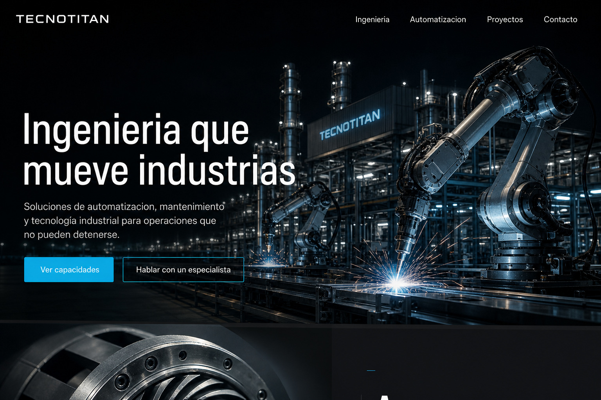
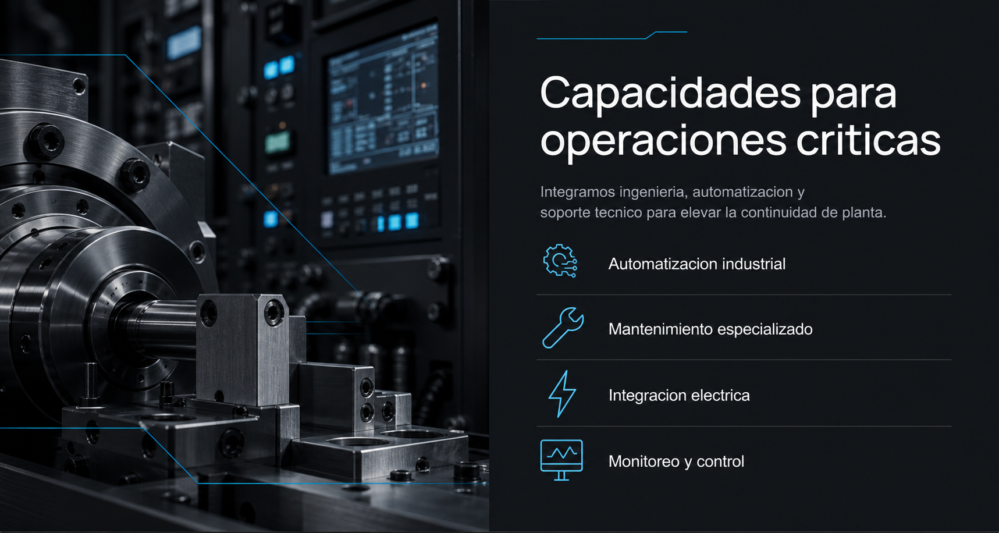
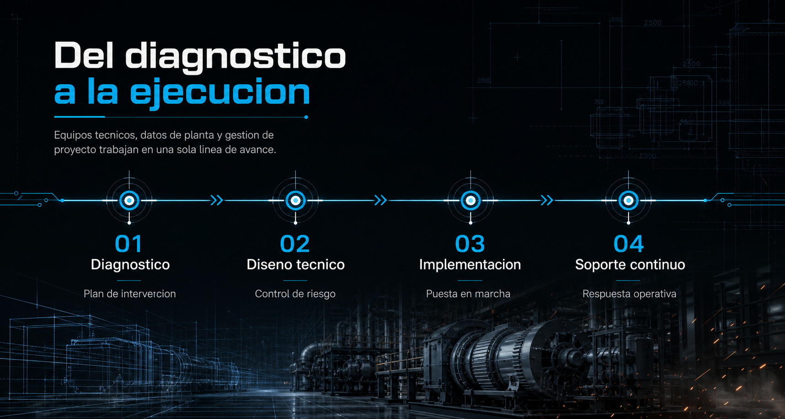
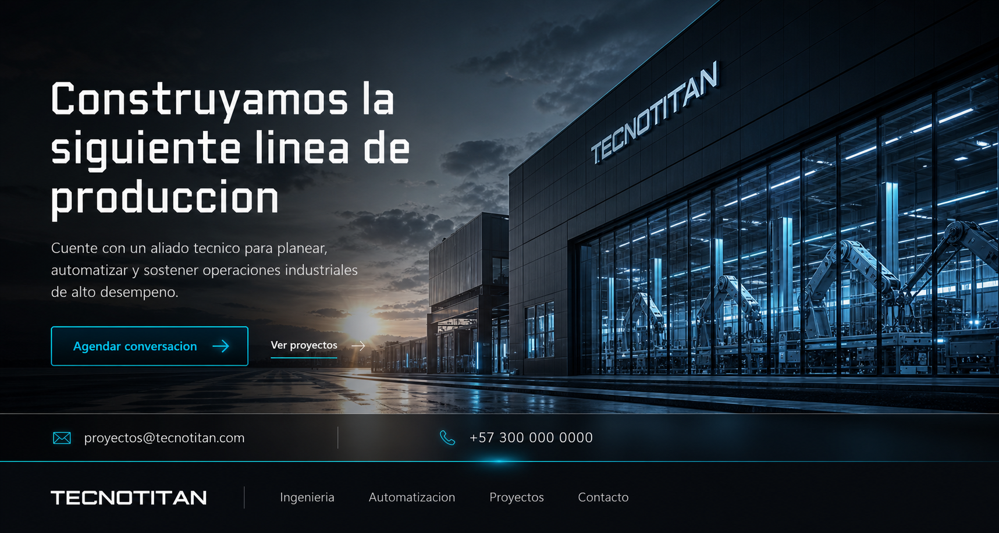

Automatizacion industrial
Arquitecturas de control, sensores, actuadores y tableros.

Soluciones de automatizacion, mantenimiento y tecnologia industrial para operaciones que no pueden detenerse.

Integramos ingenieria, automatizacion y soporte tecnico para elevar la continuidad de planta.
Arquitecturas de control, sensores, actuadores y tableros.
Intervenciones tecnicas con trazabilidad y respuesta de campo.
Conexion segura entre potencia, control y sistemas de planta.
Datos operativos claros para supervisar continuidad y riesgo.

Equipos tecnicos, datos de planta y gestion de proyecto trabajan en una sola linea de avance.
Plan de intervencion
Control de riesgo
Puesta en marcha
Respuesta operativa
Cada entrega combina planeacion, instalacion, pruebas y soporte para que la mejora llegue a la operacion real.
Secuencias de planta, instrumentacion y puesta en marcha.
Arquitecturas electricas preparadas para continuidad operativa.
Equipos tecnicos alineados con tiempos y criticidad de planta.

Cuente con un aliado tecnico para planear, automatizar y sostener operaciones industriales de alto desempeno.